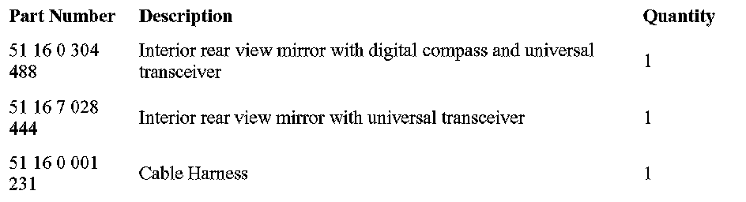

Accessories - Universal Transmitter (UGDO) Harness
SI B 61 12 06October 2006
General Electrical Systems
Technical Service
This Service Information bulletin supersedes S.M. B61 211 04 dated August 2004.
SUBJECT
Vehicle not Pre-Wired for Retrofitting UGDO
MODEL
E83 (X3) without ZPP Premium Package
SITUATION
After installing an interior mirror with Universal Transmitter (UGDO), UGDO does not operate.
CAUSE
X3 vehicles without Premium Package are not pre-wired for UGDO retrofit.
PROCEDURE
Install cable harness P/N 51 16 0 001 231. See also, parts information bulletin 51 06 04. For information, available UGDO mirrors are:

PARTS INFORMATION

Disclaimer